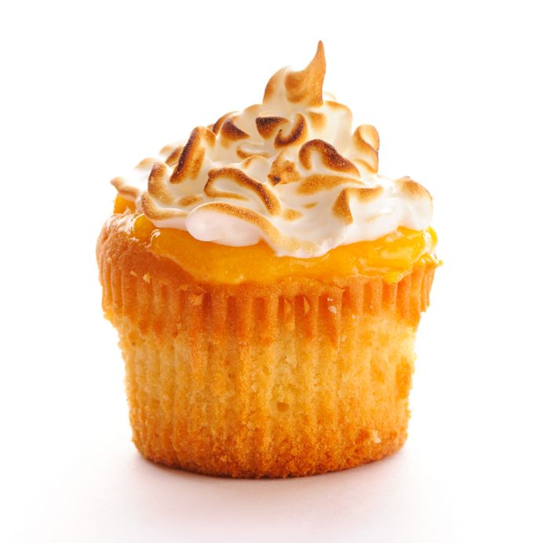

100 cupckaes a day
Every day we make 100 cupcakes of a special flavor not on the menu. Order it by name & it's free! You have to act fast though, when all 100 are gone the deal is done for the day. (Limit 1 per customer.)
P.S. We post the flavor name on Twitter about 30 minutes before the website, so follow us to get a head start.
Today's free cupcake
October 9 - Triple Caramel
Today's free cupcake October 9 Triple Caramel 36 left ! Why do you do this ? We freshly bake more than 50 varieties of cupcakes a day including standars such as Red Velvet, Carrot and Devil's Food as wekk crazy esoteric (but delicious) flavors such as Milshake, Hot Chocolate and Cannoli. We're pretty sure that once you get a taste of what we have to offer you'll be back for more. It's that Simple!
Sample of not-so-free wares
Why do you do this ? We freshly bake more than 50 varieties of cupcakes a day including standars such as Red Velvet, Carrot and Devil's Food as wekk crazy esoteric (but delicious) flavors such as Milshake, Hot Chocolate and Cannoli. We're pretty sure that once you get a taste of what we have to offer you'll be back for more. It's that Simple!
Carrot...
Why do you do this ?
We freshly bake more than 50 varieties of cupcakes a day including standars such as Red Velvet, Carrot and Devil's Food as wekk crazy esoteric (but delicious) flavors such as Milshake, Hot Chocolate and Cannoli. We're pretty sure that once you get a taste of what we have to offer you'll be back for more. It's that Simple!Sample of not-so-free wares